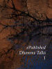
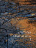
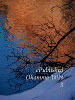
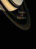
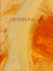
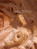
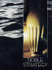
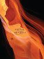
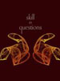

Access to Insight is discontinuing the support of e-books in epub & mobi formats. The e-book files listed on this page will remain here until the end of 2012.
For the most complete and up-to-date collection of Thanissaro Bhikkhu's e-books see DhammaTalks.org.
These books and articles are available in ePub format for use in many eBook readers (iPad, nook, Sony Reader, etc.).
eBooks marked with a star have been proofread and officially authorized by the author or translator.
Need help? See "Working with ePub files".
Awareness Itself, by
.
This book contains a delightful and inspiring collection of anecdotal stories retold by an American monk who lived under Ajaan Fuang's tutelage for the last decade of Ajaan Fuang's life. These anecdotes reveal a teaching style that adapted ... [Read HTML version]

ePublished Dhamma Talks (1), by
.
Thirty-seven Dhamma talks from the evening meditation sessions at Metta Forest Monastery.

ePublished Dhamma Talks (2), by
.
Twenty-two Dhamma talks from the evening meditation sessions at Metta Forest Monastery.

ePublished Dhamma Talks (3), by
.
Seventy-eight Dhamma talks from the evening meditation sessions at Metta Forest Monastery.

Frames of Reference, by
.
Ajaan Lee's classic introduction to the four foundations of mindfulness from the perspective of breath meditation. [Read HTML version]
Head & Heart Together: Essays on the Buddhist Path, by
.
Thirteen essays, including: 'The Lessons of Gratitude', 'No Strings Attached', 'The Power of Judgment', 'Think like a Thief', 'Strength Training for the Mind', 'Mindfulness Defined', 'The ...
Keeping the Breath in Mind: and Lessons in Samadhi, by
.
A complete handbook for breath meditators, full of detailed practical instructions for the development of concentration and insight. [Read HTML version]
Meditations 1: Forty Dhamma Talks, by
.
These short talks on meditation practice were given by Ajaan Geoff (Thanissaro Bhikkhu) during the evening meditation sessions at Metta Forest Monastery (California). Using breath meditation as the principal point of reference, these talks address a wide ... [Read HTML version]

Meditations 2: Dhamma Talks, by
.
More Dhamma talks from the evening meditation sessions at Metta Forest Monastery. This book is highly recommended. [Read HTML version]
Meditations 3: Dhamma Talks, by
.
More Dhamma talks from the evening meditation sessions at Metta Forest Monastery. This book is highly recommended. [Read HTML version]
Meditations 4: Dhamma Talks, by
.
More Dhamma talks from the evening meditation sessions at Metta Forest Monastery. This book is highly recommended. [Read HTML version]

Meditations 5: Dhamma Talks, by
.
More Dhamma talks from the evening meditation sessions at Metta Forest Monastery. [Read HTML version]

Noble Strategy: Essays on the Buddhist Path, by
.
A collection of essays concerning the Buddhist path of practice. The essays, which are available online individually, include: "Affirming the Truths of the Heart", "Karma", "The Road to Nirvana Is Paved with Skillful Intentions", "The Healing Power of ... [Read HTML version]

Selves & Not-self: The Buddhist Teaching on Anatta, by
.
Five talks on the topic of not-self (anatta), from a ten-day meditation retreat held in France. [Read HTML version]

Skill in Questions: How the Buddha Taught, by
.
This book offers an in-depth exploration of the role of questions in the Buddha's teaching, organized around the four classes of questions that the Buddha addressed: questions that call for a direct, categorical answer; those that must be reframed; ...